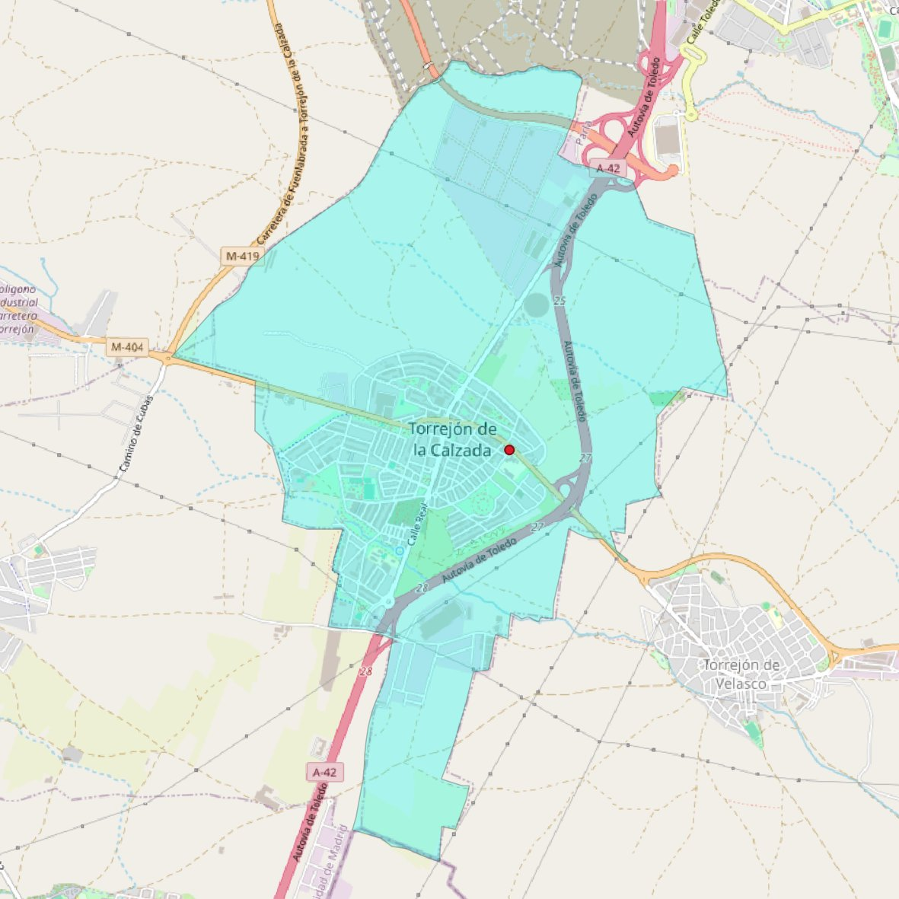

Torrejón de la Calzada · Arciprestazgo de Parla · Diócesis de Getafe

De cada 100 habitantes, 22 tienen menos de 18 años, 12 tienen 65 o más y 16 han nacido en otro país.
| Parroquia | Arciprestazgo | Diócesis | |
|---|---|---|---|
| Habitantes (2025) | 10.618 | 153.525 | 1.729.840 |
| Habitantes por km² | 1.183 | 1.783 | 751 |
| Edad media (2024) | 38,3 años | 39,3 años | 42,3 años |
| Menores de 18 (2024) | 22,5 % | 21,3 % | 18,2 % |
| 65 o más (2025) | 12,2 % | 13,9 % | 18,4 % |
| Índice de envejecimiento (2025) | 66 | 81 | 127 |
| Nacidos en otro país (2025) | 16,0 % | 30,1 % | 20,3 % |
| Renta por persona (2024) | 15.800 € | 12.500 € | 16.000 € |
| Personas por hogar (2024) | 3,11 | 3,05 | 2,80 |
| Hogares de una persona (2024) | 15,3 % | 18,4 % | 21,0 % |
| Estudios superiores (2024) | 32,0 % | 21,9 % | 32,4 % |
| Paro (2024) | 7,9 % | 10,9 % | 9,1 % |
Cifras de viviendas según las fuentes citadas en la ficha de cada desarrollo, en la sección «Previsión de desarrollos urbanísticos».